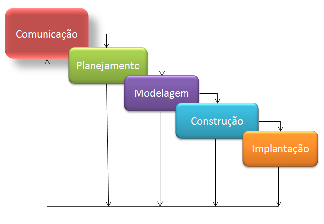
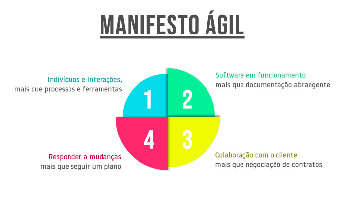

Decidir iniciar projetos é uma decisão muito séria, visto que essas escolhas podem ser determinantes para o futuro das empresas. O mercado é instável e bola de cristal não existe para dizer os resultados do novo projeto, depois de algum tempo. Mas, algumas considerações, inclusive financeiras, podem contribuir para analisar se vale ou não à pena fazer o investimento.
Gerenciamento de requisitosGerenciamento de requisitos é o processo de documentação, análise, rastreamento, priorização e concordância sobre os requisitos e então o controle de mudanças e comunicação às partes envolvidas (stakeholders) relevantes. É um processo contínuo durante um projeto.
Ciclos de Vida de softwareO ciclo de vida é a estrutura contendo processos, atividades e tarefas envolvidas no desenvolvimento, operação e manutenção de um produto de software, abrangendo a vida do sistema, desde a definição de seus requisitos até o término de seu uso.
O modelo de ciclo de vida é a primeira escolha a ser feita no processo de software. A partir desta escolha definir-se-á desde a maneira mais adequada de obter as necessidades do cliente, até quando e como o cliente receberá sua primeira versão operacional do sistema.
Prototipação de softwareA prototipagem de software é a atividade de criação de protótipos de aplicativos de software, ou seja, versões incompletas do programa de software em desenvolvimento. É uma atividade que pode ocorrer no desenvolvimento de software e é comparável à prototipagem conhecida em outras áreas, como engenharia mecânica ou manufatura.
Técnicas de Quarta geraçãoO termo “técnicas da quarta geração” (4GT) abrange um amplo conjunto de ferramentas de software que têm uma coisa em comum: cada uma delas possibilita que o desenvolvedor de software especifique alguma característica do software num nível elevado. O paradigma (4GT) da engenharia de software concentra-se na capacidade de se especificar software a uma máquina em um nível que esteja próximo à linguagem natural ou de se usar uma notação que comunique uma função significativa.
Manifesto Ágilé uma declaração de princípios que fundamentam o desenvolvimento ágil de software.
 eXtreme ProgrammingProgramação extrema (do inglês eXtreme Programming), ou simplesmente XP, é considerada uma metodologia ágil[1][2][3] pois se ajusta bem a pequenas e médias em desenvolvimento de software com requisitos vagos e em constante mudança. Para isso, adota a estratégia de constante acompanhamento e realização de vários pequenos ajustes durante o desenvolvimento de software.
Os cinco valores fundamentais são: comunicação, simplicidade, feedback, coragem e respeito. A partir desses valores, possui como princípios básicos: feedback rápido, presumir simplicidade, mudanças incrementais, abraçar mudanças e trabalho de qualidade.